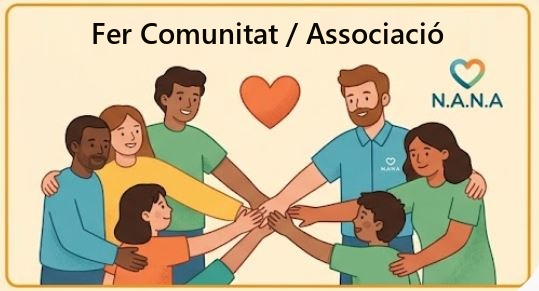

No esteu sols. Us acompanyem a cada pas.
Us ajudem a entendre el diagnòstic, a demanar els ajuts als quals teniu dret i a trobar els recursos que el vostre fill o filla necessita. Amb calma, amb proximitat i sense paperassa en solitari.

Acabeu de rebre el diagnòstic?
És normal sentir-se perdut. Des de N.A.N.A. us acompanyem en tot moment, al vostre ritme i sense que ho hàgiu de fer sols.
Contacteu amb nosaltres
Per telèfon, WhatsApp o el formulari. Expliqueu-nos la vostra situació amb les vostres paraules.
Revisem el vostre cas
Mirem junts quins ajuts i recursos us corresponen segons l’edat, el diagnòstic i la vostra situació familiar.
Us acompanyem
Preparem la documentació amb vosaltres i fem el seguiment de cada tràmit fins al final.
Ajuts i tràmits en què us orientem
Moltes famílies no demanen ajuts perquè no saben que existeixen o perquè el procés aclapara. Us expliquem requisits, terminis i documents.
A quins ajuts teniu dret?
Responeu unes preguntes i veureu els ajuts que encaixen amb la vostra situació, on es demanen i, quan estigui disponible, un vídeo que ho explica pas a pas.
Certificat de discapacitat
La porta d’entrada a molts altres ajuts i beneficis fiscals.
Per exemple:
- Us ajudem a omplir la sol·licitud per al CAD i a reunir els informes mèdics i escolars que convé adjuntar.
- Us preparem per a la cita de valoració: què us preguntaran, què cal portar i com explicar el dia a dia del vostre fill o filla.
- Si el percentatge reconegut no reflecteix la seva situació, us acompanyem a demanar-ne la revisió o a presentar una reclamació.
Reconeixement de dependència
Valoració del grau i prestacions econòmiques o de serveis associades.
Per exemple:
- Preparem amb vosaltres la visita de valoració a casa, perquè es vegin les necessitats reals i no només un “bon dia”.
- Us expliquem el Programa Individual d’Atenció (PIA) i quina prestació encaixa millor, per exemple la de cures en l’entorn familiar.
- Si la situació canvia o no esteu d’acord amb el grau, us ajudem a demanar-ne una revisió.
Beques i suports a l’escola
Ajuts per a l’alumnat amb necessitat específica de suport educatiu i recursos al centre.
Per exemple:
- Us ajudem a demanar la beca del Ministeri per a alumnat amb necessitat específica de suport educatiu, que pot cobrir logopèdia o reeducació.
- Preparem amb vosaltres la reunió amb l’escola i l’EAP per demanar suports com una vetlladora o una aula SIEI.
- Revisem junts el pla de suport individualitzat (PI) perquè reculli el que el vostre fill o filla necessita.
Atenció precoç
Com accedir als serveis d’atenció precoç (CDIAP) i què se’n pot esperar.
Per exemple:
- Us expliquem com demanar cita al CDIAP de la zona: és gratuït per a infants de 0 a 6 anys i la podeu demanar directament, encara que no tingueu derivació del pediatre.
- Us expliquem com sol ser la primera visita i quines teràpies s’hi ofereixen, com logopèdia o psicomotricitat.
- Us orientem sobre què fer quan fa 6 anys i deixa el CDIAP: seguiment a salut mental infantil (CSMIJ), suports a l’escola i altres recursos.
Prestacions i deduccions
Prestacions per fill a càrrec, deduccions a la renda i altres avantatges per a la família.
Per exemple:
- Us ajudem a demanar a la Seguretat Social la prestació per fill o filla a càrrec amb discapacitat.
- Revisem amb vosaltres la declaració de la renda per aplicar el mínim per discapacitat i les deduccions que us corresponguin.
- Us informem d’altres avantatges, com el títol de família nombrosa (amb dos fills pot correspondre si un té discapacitat) o la targeta acompanyant al transport públic.
Recursos i terminis al dia
Us avisem de les convocatòries obertes perquè no se us passi cap data.
Per exemple:
- Us avisem quan s’obre la convocatòria de la beca per a alumnat amb necessitat específica de suport educatiu, perquè la demaneu a temps.
- Us recordem dates importants, com la revisió del certificat de discapacitat o el període de preinscripció escolar.
- Compartim ajuts per a casals d’estiu, activitats de lleure adaptat i subvencions de l’Ajuntament de Sant Boi i de la Generalitat.
Un nucli de famílies que s’acompanyen
N.A.N.A. neix de famílies que han viscut el mateix que vosaltres. Sabem el que costa, i per això compartim el que hem après.

N.A.N.A. a Sant Boi
Som una associació de Sant Boi de Llobregat formada per famílies del municipi. Coneixem les seves escoles, els seus serveis i els seus recursos, i treballem perquè cap família de la ciutat hagi de fer sola el camí de l’autisme.
Els nostres esdeveniments
Tallers, trobades i activitats que hem organitzat. Prem cadascun per veure’l a Instagram.
Junts arribem a més famílies
Fes-te’n soci, col·labora com a voluntari o fes un donatiu. Cada aportació es converteix en acompanyament.
Parlem
Escriviu-nos sense compromís. Us respondrem amb calma i estarem encantats d’ajudar-vos.